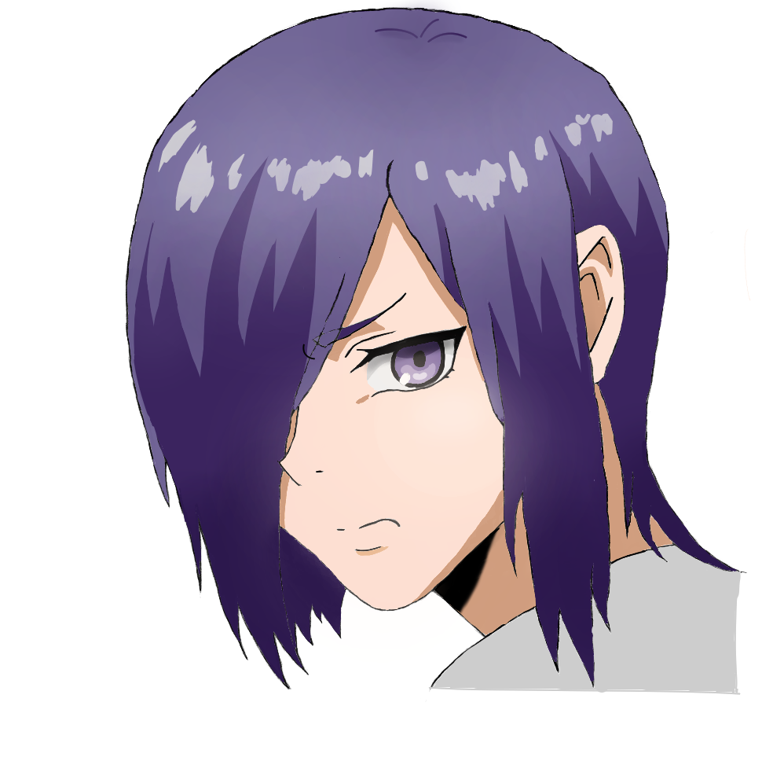

My Programming Roots
I learned HTML and CSS in my high school coding class. We didn't have a teacher who actually coded, but she was in charge of the class. We started with the basics of computers, the history of the Internet, and HTML. I remember I made a website about myself, and included images and styles. I talked about my hobbies and stuff. I was proud of it back then. I also made another website teaching you how to make scrambled eggs. I still recall struggling to remember how to link a CSS file to an HTML one. We also had to take a JavaScript test and no ONE knew anything. Except me, but only a little bit.
Camping Sucks (for me)
I remember the first time I went camping. I hated it. It was in Blue Springs Ranch. There was no internet, there were bugs and I detest having bugs around me (not scared). I had to wave away the flies that were bothering me everytime I was eating. A spider once got in our tent too, so yeah screw that. Also, sometimes the nights are too humid so I had trouble falling asleep. As a night person, I was forced to wake up when the sun rose; everything was so bright. Never again.
Art and Drawing
My oldest and longest hobby is drawing. As a kid, I would always draw Nintendo characters, namely from Super Mario. I created my own fan art of characters and worlds. I then grew out of that liking, and started to draw less often, but I still had the skills in me whenever I got the chance. In my high school art class, I did more sketching, figure drawing, and abstract drawing. I even won third place on a contest I didn't even try my best for. I just drew a dog shaking water of its fur with oil pastels. I also started doing digital fan art recently. I hope I finish some of my art I never completed. Seeing others' digital art online sometimes inspires me.
